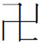

一画
一般 ①304.4；③456.20；（11）319.3。
一三杂志 （16）619.6。
二画
二六新报 ②328.2。
十日谈 ⑤431.2；（12）493.1。
十字街头 ④430.8；（12）304.2；（14）6.3。
人言 ⑤432.6；（13）135.6。
人间世（上海） ⑤489.5；⑥316.5，451.9；⑧426.2；（17）277。
人间世（汉口） ⑥516.9；（13）68.1，94.4。
儿童专刊 （14）158.1。
儿童世界 ②265.9。
三画
三五日报 （12）52.1，63.1，65.1。
工商报 见《工商日报》。
工商日报 ③455.10；（12）36.3。
大学 ④589.19。
大公报 ⑥411.4，628.2；（13）9.9，44.1；（16）441.4，550.13；（17）279。
大陆报 ③566.5。
大调和 （17）460。
大晚报 ④524.15；⑤27.4，374.2；⑥222.4；（12）420.1。
大众艺术 ⑧382.10。
大众文艺 ⑧499.3；⑩358.17；（11）296.1；（12）234.5；（17）280。
大江月刊 ⑧299.2；⑩318.4。
大美晚报 ④598.2；⑤433.13；⑥456.49；（13）108.1。
大上海半月刊 （13）119.3。
大阪朝日新闻 见《朝日新闻》。
《大公报》文学副刊 （12）223.2。
万朝报 （17）461。
上海日报 ④360.4。
上海自然科学研究所汇报 （17）461。
山雨 ④176.2；（12）142.1。
千秋 （16）454.13。
广东通信 （17）283。
之江日报 （17）284。
小说 （17）284。
小公园 （13）547.3；（16）550.13。
小说报（苏联） 见《小说杂志》。
小说林 ⑨304.21；（13）94.7。
小说月报 ①239.3；④313.25；⑥371.14；⑦130.5；⑧133.2；⑩310.2；（11）402.4；（17）285。
小说世界 ④314.26；⑧139.1；（11）451.3。
小说丛报 ⑩179.7。
小说杂志 ⑩359.28；（17）570。
小说月报·被压迫民族文学号 ④477.11；⑥371.14。
小品文与漫话 （17）286。
子规 ⑩245.9。
乡土研究 （17）513。
四画
天下篇 ⑥221.1；（13）46.1；（16）437.12；（17）287。
天觉报 （15）28.12；（17）287。
无名文艺 （17）289。
无轨列车 ⑦214.109。
无产阶级文学 见《普罗文学》。
无产者的科学 （12）231.5。
云南周刊 （17）290。
艺术 （13）12.2，391.1；（17）567。
艺术新闻 （12）379.1。
艺坛导报 （17）291。
木刻界 （14）54.1。
木屑文丛 （13）545.9。
支那学 见《中国学》。
支那二月 （17）293。
支那研究 （17）464。
太白 ⑤440.4；⑥222.6，376.2；⑧430.2；（13）185.2，207.1；（17）294。
太阳月刊 ④124.6。
友中月刊 （17）295。
厄楞斯皮该尔 （17）541。
戈壁 ④125.8。
少年先锋 ④26.13；⑧199.7；（17）296。
日日新闻 （14）305.3。
日本月刊 （17）455。
日华公论 （11）405.10。
日露艺术 ⑦214.112。
日本文学季刊 （17）440。
日本的今日和明日 （17）547。
中流 （17）296。
中庸 ④589.19。
中国学 （11）411.11；（14）177.2。
中学生 ④283.2，372.1；⑤27.2；⑥452.18；（14）75.2；（17）296。
中央日报（武汉） （12）32.2。
中央日报（南京） ⑤432.4。
中央美术 （17）469。
中华日报 ⑤440.3；（13）309.2。
中华新报 ①415.3。
中国论坛 （14）205.9；（17）536。
中国青年 ④315.32；（14）319.4。
中国呼声 （14）73.3，89.3。
中国学报 （17）297。
中华日报·戏 见《戏》周刊。
中央日报副刊（汉口） （11）188.2；（12）30.1；（17）298。
中外书报新闻 ⑤194.17。
中国文学月报 （14）351.3，360.3。
气象 （17）299。
长夜 ④278.2。
长青 ①416.8。
什么话？ ⑧462.1。
月月小说 ⑨303.9。
文人 ⑦340.2；（12）126.5；（14）408.5。
文艺 （12）458.2；（14）305.2；（17）302。
文史 （13）98.1；（17）302。
文学（月刊） ④430.8；⑥222.10，336.1；⑦441.5；⑩430.2；（12）503.1；（13）9.7；（14）162.1；（17）302。
文学（半月刊） （17）302。
文战 见《文艺战线》（日）。
文新 见《文艺新闻》。
文学报 （12）299.1；（13）37.1，229.1；（16）482.6；（17）568。
文学界 ⑥560.6；（14）139.2。
文艺月报 （17）303。
文艺风景 ⑤602.7；⑥128.3。
文艺生活 ④226.51；⑩345.21。
文艺讲座 （17）303。
文艺画报 ⑤608.2；⑥245.3。
文艺季刊 （17）303。
文艺周报 （16）628.7；（17）303。
文艺春秋 （17）303。
文艺春秋（日） （14）327.1。
文艺研究 ⑧341.1；（12）231.8，243.2；（17）303。
文艺战线（日） （14）205.7。
文艺独白 ⑧420.6。
文艺座谈 ⑤194.14，233.8。
文艺新闻 ④318.1；⑧369.1；（12）269.4；（17）303。
文化月报 （14）238.2；（17）303。
文化列车 ④648.2。
文化批判 ④69.12。
文化战线 ⑦215.114。
文饭小品 ⑥316.5；⑧431.2。
文学月报 ④430.8；⑩420.50；（12）328.6；（17）304。
文学世界 （12）249.3；（17）549。
文学生活 （13）360.1；（14）85.2。
文学丛报 ⑥516.4；（14）87.5；（17）304。
文学杂志 （12）354.2，360.3，397.4；（17）304。
文学旬刊 （17）304。
文学论坛 ⑥226.1；（16）524.8。
文学导报（上海） （13）577.3。
文学导报（北平） （13）598.2；（14）60.4。
文学评论（日本） ⑩439.7，477.3。
文学青年 （17）304。
文学季刊 （12）470.3；（13）22.4；（17）304。
文学周刊 ⑦250.3；（17）304。
文学周报 ③401.2；⑦215.114；（12）153.3；（17）305。
文学新地 （13）291.4。
文学新闻 （13）400.5；（17）305。
文学新辑 （17）305。
文哲学报 ①415.4。
文章世界 ⑩312.2。
文章病院 ⑤27.2；（11）7.9。
文献特刊 （17）305。
文学的反响 ⑩288.6。
文学的遗产 ⑥594.3；（17）568。
文学底俄罗斯 ⑩497.3。
文学的遗产·歌德专号 （13）12.10。
火炬 ⑤374.2；⑧429.3。
火星报 ④272.10；⑦375.12。
孔德月刊 ⑧213.18。
孔德学校周刊 （11）504.1。
书物趣味 （17）507。
书籍艺术镜报 （17）551。
幻洲 （11）233.1，611.2。
五画
未明 （12）155.6；（17）310。
未名月刊 （12）205.1。
未名（半月刊） ⑩334.17；（11）625.2；（12）196.4；（17）309。
世界 ⑥113.45；（16）475.4。
世界日报 ①269.20；③335.5；（11）255.5；（17）310。
世界月刊 （17）310。
世界文化 （17）310。
世界文库 ⑥370.3；（13）391.4，403.2；（17）310。
世界文学 ⑥510.3。
世界画报 （12）352.2；（17）310。
世界周刊 （13）231.1。
世界语周刊 （17）311。
世界繁华报 ⑨302.1。
世界文学评论 （17）475。
世界文坛了望台 ⑤608.6。
世界革命的文学 ⑩419.45。
古香斋 ⑤362.7；（13）108.2。
古东多万 （14）205.4；（17）477。
左向 （17）549。
左曲 （17）549。
平报 （17）313。
平民报 （11）30.9。
平民周刊 见《民众文艺》。
东方杂志 ③592.4；④484.2；⑤10.2；⑦257.10；⑩233.2；（11）290.1，403.8；（17）314。
东方学报（东京） （17）494。
东方学报（京都） （14）323.3；（17）494。
东亚日报 （16）380.13；（17）314。
北斗 ④374.1，430.8；⑥528.2；⑦426.11；（12）312.6；（17）315。
北新 ③478.3；⑧314.2，495.2；（11）630.1；（17）315。
北辰报 （17）315。
北方之翼 ⑦375.9。
北京大学日刊 （17）315。
北京孔德学校旬刊 （17）316。
北京女子高等师范文艺会刊 （17）316。
北京女子高等师范学校校刊 （11）438.1。
北京高等师范学校校友会杂志 （17）316。
申报 ④93.3，310.2；⑤5.1，439.1；⑥117.5，587.2；⑧284.2；（12）305.3；（17）316。
申报月刊 ④430.8；（12）534.5；（17）317。
申报·本埠增刊 （13）94.5。
申报图画附刊 （17）317。
甲寅周刊 ③121.3，226.15；（11）511.6。
史地学报 ①415.4。
业余周刊 （13）94.5。
出版消息 ⑥480.9；（12）523.5。
生活 ④598.3；（12）395.2，529.1；（16）395.4。
生存线 （17）319。
生生月刊 ⑥222.7；（13）336.3。
生活知识 （17）319。
白桦 ⑩246.21。
白与黑 （13）41.2，540.3；（14）280.3；（17）480。
市民日报 （16）79.1。
立报 （13）561.2。
汉风杂志 ③456.18。
礼拜六 ①416.8；（11）300.4，412.4。
尼瓦 ⑦348.4。
民报（东京） ①5.3；⑤265.5；⑥569.9。
民报（北京） ③472.16；（17）324。
民报（台湾） 见《台湾民报》。
民心周报 ①415.4。
民众文艺 ④47.4；⑦276.3；⑧470.2；（11）93.5，459.5，511.5。
民兴日报 （17）324。
民国日报 ④26.10，197.7；⑩223.4；（11）25.4，213.1。
民国公报 （11）53.6。
民钟日报 （12）34.1。
民众文艺周刊 见《民众文艺》。
民国日报副刊 （12）41.6。
台湾文艺 （14）345.2；（17）326。
台湾民报 （17）326。
六画
动向 ⑤440.3；（13）91.4；（17）326。
芒种 ⑥282.6；（13）198.2，365.2，512.1；（17）327。
亚细亚 （17）533。
亚佐夫海边报 ⑩417.22。
亚洲学术杂志 ①415.4。
在岗位上 ⑦204.22；⑩343.7。
列夫 ⑦279.5。
列宁青年 见《中国青年》。
光明 （14）172.2。
当代文学 （17）332。
早稻田文学 ⑩272.5。
同仁医学 （17）332。
华北日报 ⑦130.2；（11）319.1。
华北日报副刊 （17）333。
自然 （17）483。
自由谈 ④429.7；⑤5.1，201.1，439.1；⑥222.5；⑧359.2；（12）312.7，521.4；（17）334。
自然界 （17）334。
自由谈半月刊 见《新语林》。
自由谈·萧伯纳专号 （12）374.2。
伊覩 （17）483。
创造（季刊） （11）414.7；（17）337。
创造月刊 ③565.2；④124.4；（17）337。
创造周报 （17）337。
杂文 ⑥479.4；（13）598.1；（17）337。
江苏清议 （17）339。
汗血月刊 （13）114.5。
宇宙风 ⑥451.9，529.9，630.2。
安阳发掘报告 （12）313.9，334.2；（17）340。
字林西报 ⑤52.7。
论语 ④430.8；⑤292.3，488.2；⑥451.9；（12）377.8；（17）340。
论语·萧伯纳游华专号 ④587.9。
那巴斯图 见《在岗位上》。
妇人世界 （17）513。
妇女之友 （11）255.4。
妇女生活 （13）529.3。
妇女杂志 ⑦81.4；（11）13.3，412.5；（17）341。
妇女周刊 ①285.15；（11）30.5，511.4；（17）341。
《戏》周刊 ⑥152.2；⑧513.1；（13）309.2；（17）341。
戏（月刊） （17）341。
叒社 （17）342。
红旗（德） ⑩475.2。
红杂志 ①416.8。
红玫瑰 （11）300.3。
红色处女地 ⑦205.28；⑩344.15。
七画
贡献 ④179.21；（12）97.2；（17）343。
赤色新地 见《红色处女地》。
连环两周刊 （13）179.1。
批社会趣味的嘴巴 ⑦280.9。
医学周刊集 （17）347。
时报 ④360.2；（11）361.3。
时务报 ②310.28；④476.2。
时事新报 ④93.3；⑤194.16；⑦207.50；（12）415.1；（17）348。
我们月刊 ④125.7。
我们的路 ⑧525.2。
每日评论 （12）19.1。
每日笔记 ⑧369.4。
每周文学 （14）4.3。
每周评论 （11）372.4；（17）349。
每日国际文选 ⑥112.44。
作品 （14）372.2；（17）349。
作家 （14）82.1；（17）349。
作家们（苏联） ⑩497.4。
伴侣 （17）349。
佛学丛报 （17）349。
希望 见《希望月刊》。
希望月刊 （12）231.3；（17）350。
谷风 （17）350。
狂飙 ④59.5；⑧191.13；（11）175.7，596.2；（17）351。
狂飙（不定期刊） （17）351。
言语科学 ⑥113.45。
这样做 ③511.8；④25.7。
快活 ①416.8；⑧139.7。
沙沃伊 ⑦358.4。
沉钟 ②230.5；③511.4；⑥268.34；⑦219.150；（11）185.1，536.1；（17）351。
良友 见《良友图画杂志》。
良友图画杂志 （11）319.2；（13）292.3；（17）353。
社会日报 ①269.20；⑥516.5；（13）573.3；（14）6.3，134.7。
社会月报 ⑤592.3；⑥222.3；（13）376.5。
社会新闻 ⑤192.2，431.1；（12）354.5。
社会科学季刊 （17）353。
词学季刊 （13）9.8；（17）354。
译文 ⑥496.17，510.1；⑦487.1；⑧415.1；⑩443.3；（13）182.2；（13）236.2，456.3；（17）354。
译学汇编 ②311.35。
灵学丛志 ①320.11。
改造 ⑤432.5；⑥221.1；⑦256.7；⑩443.4；（13）40.4；（14）193.3；（17）491。
八画
环球 ⑦214.105。
青光 ①428.11；⑥451.8。
青年界 ⑩387.32；（12）269.5；（17）357。
青年杂志 见《新青年》。
青年近卫军 ⑩398.8。
青年界·青年作文指导特辑 （13）611.2。
现代 ④430.8；⑤493.4；⑥128.5，496.17；⑧420.6；（12）360.6；（14）94.1；（17）357。
现代（日） ⑩215.8，227.2；（17）508。
现代小说 ④125.9；（12）234.4。
现代木刻 见《现代版画》。
现代中国 （14）6.4；（17）358。
现代妇女 （17）358。
现代评论 ①6.5；③84.4；⑤330.10；⑥267.18；⑦70.7；⑧200.11；（11）30.6；（12）16.1；（17）358。
现代版画 （13）328.2，405.1，433.1；（17）358。
现实文艺 （14）4.4。
现实文学 ⑥563.27。
《现代评论》第一周年纪念增刊 ③205.12。
画室 ⑦340.2；（17）436。
奔流 ④196.2；⑦201.1，479.1；⑧308.2；⑩335.18；（11）289.7；（12）110.6；（17）362。
奔流·托尔斯泰诞生百年纪念增刊 （12）148.15。
拓荒（太原） （17）362。
拓荒者 ④224.36；（12）234.3。
欧罗巴 （17）541。
国魂 ③224.2。
国民公报 ⑩207.4；（11）380.5。
国民新闻 ④26.10；（11）213.1；（12）47.9。
国民新报 （15）597.2；（17）363。
国际文化 ⑦348.3。
国际文学 ⑥20.1；（12）506.13；（13）447.5；（17）546。
国际通讯 ④273.19。
国学季刊 （17）363。
国语周刊 （11）505.2。
国闻周报 ⑥586.2；（13）9.9，497.2。
国粹学报 ①416.7。
国民新报副刊 （17）363。
国外文坛消息 ④356.2。
明日 （14）248.2；（17）496。
明珠 （11）668.4。
明星报 ④272.15。
罗曼杂志 见《小说杂志》。
图书评论 ④562.3。
图画周刊 ⑧472.3。
季刊批评 （17）497。
版画（苏） （12）506.11。
版画（日） （14）285.2；（17）530。
版艺术 （13）41.3；（14）324.2；（17）497。
彼得堡年报 ⑩384.8。
金羊毛 ⑦315.9。
京报 ③13.2；⑧472.2；（11）50.1，459.4；（17）369。
京报副刊 ③13.2；⑥270.51；⑦299.3；（11）50.1，459.4；（17）369。
夜莺 （14）89.4。
浅草 ②230.4；（17）371。
法国文艺 （17）470。
法兰克福报 （17）542。
河南 ①5.2；⑦219.149。
学灯 ①415.2；③471.9；⑦257.8。
学说 ⑩461.2。
学衡 ①400.4。
学镫（日） ⑦250.5。
学生杂志 ⑧354.5。
波艇 ⑦203.18；（11）205.2，589.3。
泼克（星期增刊） ①349.2，350.3。
泼克（单行画刊） ①358.6。
诗歌 （17）372。
建国月刊 ⑧365.2。
弥洒 （13）381.1；（17）373。
弦上 ③411.4；（17）373。
绍兴医药月报 ②300.10。
绍兴教育杂志 ①320.9；（17）374。
绍兴教育会月刊 见《绍兴教育杂志》。
经世报 ①415.4。
经济往来 （14）366.3。
孤军周报 （11）61.1。
九画
春光 （13）38.1，106.9。
春潮月刊 ④274.32；⑩334.10；（12）158.3。
革命日报 ④254.9。
革命的妇女 ⑩302.6；（12）82.4。
草野 ④334.6。
荒岛 （12）121.1。
荒草 （17）377。
柏林晨报 （17）534。
砭群 （11）474.2。
指南报 ⑨302.1。
点滴 ⑥626.6。
点石斋画报 ③435.6；④311.8；⑧411.2；（12）427.4；（13）71.2；（17）380。
战线 ④114.3。
战旗 ④125.11；⑩335.27。
显微镜 ③69.4。
星火 ⑥392.8，415.5。
星洲日报 （13）325.1；（17）380。
选报 ④51.2。
秋野 ④180.22。
科学新闻 （12）429.1。
顺天时报 ①269.20；③104.9，490.2。
俄国财富 ⑩189.4。
俄国文学研究 （17）529。
美术 ⑧96.1。
美术生活 （14）72.2；（17）384。
美育杂志 ⑦218.143。
前卫 ⑩370.11。
前哨 （12）279.4。
前锋月刊 ④329.5。
洪水 ③512.14；④27.16；（12）71.6；（17）385。
洪荒（月刊） （17）385。
洪荒半月刊 ④125.10。
觉悟 ⑩223.4。
语丝 ①267.3；③311.2；④9.10，176.1，196.1；⑥516.6；⑦7.8；⑧271.3；（11）34.5，455.5；（12）97.3；（17）385。
眉语 ④312.15。
骆驼 （11）112.4；（17）389。
骆驼草 （12）236.1。
十画
莽原 ②236.4；③7.11，294.4；④25.2；⑥273.70；⑦82.6，284.3；⑧191.12；（11）52.1；（17）390。
莽原周刊 见《莽原》。
真美善 （17）391。
真理报 ④273.16。
格致汇编 ④627.2。
栟角公道话 （17）392。
烈夫 见《列夫》。
热风 （12）239.2。
铁报 （13）106.8。
铁马版画 （14）30.1；（17）393。
益世报 ①269.20；⑥404.3；（13）497.1。
涛声 ④430.8，577.1，577.5；⑤194.13，247.4，432.9；（12）402.2；（17）399。
浙江潮 ⑥568.7；（13）94.6。
浙江公立图书馆年报 （17）399。
消闲录 ③383.6。
海燕 ⑥541.2；（14）4.1；（17）399。
海滨月刊 （17）400。
海上繁华报 ⑨302.1。
海兑培克日报 （17）400。
流沙 ④124.5。
浪漫古典 （13）535.2。
读书生活 （13）325.3；（17）401。
读书杂志 （17）401。
读卖新闻 ①243.26；②328.2；⑦214.110；⑩485.4。
谈言 （13）181.2，181.4。
通俗教育研究录 （17）403。
绣像小说 ⑨302.4。
十一画
教育公报 （11）400.3；（17）404。
教育杂志 见《绍兴教育杂志》。
教育部编纂处月刊 （17）404。
黄书 ④447.6；⑦358.3。
黄报 ①269.20。
萌芽 见《萌芽月刊》。
萌芽月刊 ④196.3；⑧504.2；⑩345.19；（12）221.2；（17）404。
梭罗忒亚卢拿 见《金羊毛》。
雪庵絮墨 ⑥651.3。
盛京时报 （13）49.1。
辅仁学志 （17）407。
掂斤簸两 （13）461.2；（16）529.1。
救国日报 ⑤34.2。
晨报 ①400.2；④254.7；⑦50.3；⑩223.2；（17）408。
晨报（上海） （13）308.5。
晨报副刊 ①400.2；③215.5，455.12；④177.6；⑥270.50；（11）435.2。
第一小报 ③29.9。
做什么？ ④26.11；（17）409。
猛进 ①255.2；③28.3；（11）34.4；（17）410。
庸言报 （17）410。
《商报》副刊 （14）11.1。
清议报 ⑥330.6。
鸿爪 （14）63.2。
随感录 ①146.4，309.4。
十二画
越风 ⑥651.2；⑧450.2；（17）414。
越铎日报 ②330.18；⑧42.1；（17）415。
斯文 ③511.5；（14）178.2；（17）513。
散文随笔 （13）129.1。
朝华 见《朝花》。
朝花 ④287.5；⑦218.144，348.2；⑩384.11，496.5；（11）304.6；（12）193.8；（17）417。
朝日新闻 ②328.2；⑩244.4；（13）18.3；（14）272.2；（17）513。
朝霞文艺 （14）45.2。
厦大国学季刊 （11）193.5。
紫杉 （17）437。
晶报 ①267.6；④197.11；（12）446.3。
循环日报 ③454.5，471.8；④47.6；⑧199.5；（12）43.3；（16）27.6；（17）419。
普罗文学 （14）205.8。
湖北学生界 ③456.19；⑥200.23。
湘君 ①415.4。
游戏报 ⑨302.1。
十三画
鼓浪周刊 （11）227.3。
微光 （17）425。
微言 ⑤192.4，391.8；（12）429.3。
微波 （17）425。
新月 ④8.7；⑤330.11；（12）201.2。
新生 ③511.3；（13）387.1；（17）426。
新声 （12）231.2；（17）426。
新光 （13）106.9。
新村 （17）520。
新苗 （14）154.1。
新垒 （13）106.7。
新潮 ⑥266.10，267.21；⑦236.3；（11）370.4；（17）426。
新潮（日） ⑩246.29；（17）521。
新女性 ③411.2；（11）124.9，631.2；（17）426。
新小说（日） ④476.4；⑨304.17；（13）179.5，403.1。
新小说（上海） （13）393.3，400.3；（17）426。
新文学 （13）447.4。
新世界 ⑩335.25。
新生活 ⑩333.7，338.2。
新观众 （17）553。
新时代 见《新生活》。
新时代（俄） ⑩446.5。
新社会 （13）139.1，139.2。
新青年 ①131.5，443.15；③29.8，443.6；④312.17，470.2；⑤265.6；⑥76.3，265.2，267.20；⑦38.3；⑧403.6；⑩207.3；（11）358.7，378.4；（17）427。
新诗歌 （13）250.2；（17）427。
新思潮 ⑩254.2。
新闻报 ④85.2；⑧284.2。
新语林 ⑤570.4；（13）125.3，156.1，156.4；（17）427。
新消息 （17）427。
新教育 （17）427。
新蜀报 ⑧244.5。
新群众 （17）553。
新民丛报 ⑤265.5。
新兴艺术 ④423.3；（14）394.3；（17）521。
新兴演剧（日） （17）521。
新上海半月刊 见《大上海半月刊》。
新青年·易卜生号 ⑦208.53；（17）334。
满铁中国月志 （17）517。
塞庞 （17）443。
群强报 ③29.10。
十四画
歌谣（周刊） （17）430。
榴花 （12）409.1。
舆论报 ①269.20。
漫画生活 ⑥222.11；（13）325.4；（17）430。
漫画和生活 （13）588.2，589.3。
嫩芽 （17）431。
十五画
德意志中央新闻 ⑥530.12。
豫报 ③56.3。
豫报副刊 （13）361.12；（17）433。
十六画以上
醒狮周报 ⑦221.164；（11）186.3。
觱篥周年纪念刊 （17）433。
警铎报 （17）435。
鹭华 ⑧405.2。
日文
アトリヱ 见《画室》。
アララギ 见《紫杉》。
グオタリィ日本文学 见《日本文学季刊》。
セルパン 见《塞庞》。
ヤボンナ月刊 见《日本月刊》。
仏蘭西文芸 见《法国文艺》。
古東多

见《古东多万》。白と黒 见《白与黑》。
版芸術 见《版艺术》。
滿鉄支那月誌 见《满铁中国月志》。
新しき村 见《新村》。
新興芸術 见《新兴艺术》。
露西亜文学研究 见《俄国文学研究》。
西文
Asia 见《亚细亚》。
Berliner Morgenpost 见《柏林晨报》。
Bookman 见《文人》。
The Bookman 见《文人》。
China Forum 见《中国论坛》。
China Today 见《现代中国》。
DZZ 见《德意志中央新闻》。
Eulenspiegel 见《厄楞斯皮该尔》。
Europe 见《欧罗巴》。
Graphika 见《版画》（苏）。
Hanga 见《版画》（日）。
Inprekol 见《国际通讯》。
International Literature 见《国际文学》。
Iskra 见《火星报》。
Japan Today and Tomorrow 见《日本的今日和明日》。
Krylia（翼） 见《北方之翼》。
Die Linkskurve 见《左向》。
Die Literarische Welt 见《文学世界》。
Le Miroir du livre d’art 见《书籍艺术镜报》。
New Masses 见《新群众》。
Nieva 见《尼瓦》。
Novaia Zhizni 见《新生活》。
Le Nouveau Spectateur 见《新观众》。
Osaka Asahi 见《朝日新闻》。
Pravda 见《真理报》。
Russkoje Bagastvo 见《俄国财富》。
The Savoy 见《沙沃伊》。
Sphere 见《环球》。
The Studio 见《画室》。
The Voice of China 见《中国呼声》。
Zvezda 见《明星报》。
俄文
Искусство 见《艺术》。
Литературная Газета 见《文学报》。
Литературное наследство 见《文学的遗产》。
Роман-Газета 见《小说杂志》。